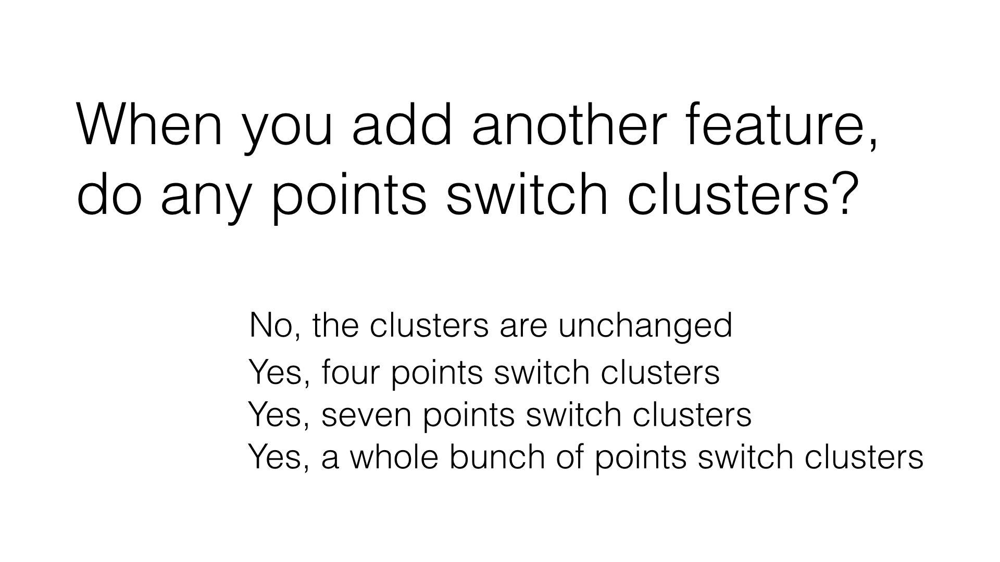

21. 使用 3 个特征聚类
使用 3 个特征聚类
Question:
向特征列表（features_list）中添加第三个特征：“total_payments”。现在使用 3 个，而不是 2 个输入特征重新运行聚类（很明显，我们仍然可以只显示原来的 2 个维度）。将聚类绘图与使用 2 个输入特征获取的绘图进行比较。 是否有任何点切换群集？多少个点？ 这种使用 3 个牲的新聚类无法通过肉眼加以猜测——必须通过 k-均值算法才能识别它。
（你需要更改创建散点图的代码，以便容纳 3 个特征而不是 2 个，有关操作说明，请参阅初始代码中的注释。）
Start Quiz:

INSTRUCTOR NOTE:
当你加入一些新的特征时，有测试点移动到不同的聚类中吗？
-
□ 没有，所有聚类都没变
-
□ 是的，有4个测试点的聚类变了
-
□ 是的，有7个测试点的聚类变了
-
□ 是的，有很多测试点的聚类变了